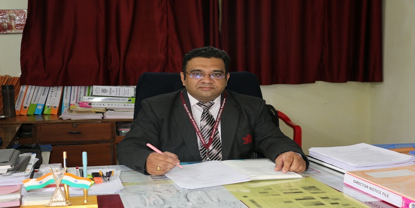

Sanjivani College Of Engineering, Kopargaon |
Home |
Departments |
Placements |
About Us |
Gallery |
Contact |
|---|
The Department of Electrical Engineering was established in the year 2017 with an intake of 60 students and offers a 4 Year B.Tech Electrical Engineering Programme is affiliated to Savitribai Phule Pune University, Pune. The B.E Electrical Engineering programme is First time applying for National Board of Accreditation (NBA). In fact, it is well known that the field of Electrical Engineering, historically, is one of the most important engineering disciplines that have changed the living style of the world. The faculty members are well trained in the areas of Electrical Machine, Power Systems, Power Electronics and Drives, Control Systems, Smart grid, Renewable energy and e-Vehicle.
The Vision, Mission and the Program Educational Objectives (PEOs) of the Department have been finalized in view of the ever-growing technical requirement and need in the field of Electrical Engineering after considering the feedback from various Stakeholders, which include Students, Alumni, Parents of the Students, Faculty and Staff Members, Industries and Research Organizations.
Various personal and professional skill development programs like Communication and Soft Skill programs, Aptitude Training, Technical Skill enhancement programs, Foreign Language Certification Courses, Personal and Spiritual Development Programs, Entrepreneurship Development Activities, and Preparation courses for competitive Examinations (Gate/GRE/CAT etc.) are made available in campus. Students are given opportunities to develop and nurture their leadership qualities through Student Associations, Student Council, Professional Body activities and working as volunteers in various events organized at Department/ College level.
I am very happy to express my views on the development of Electrical Engineering Department. Department of Electrical Engineering was established in the year 2017, approved by AICTE New Delhi, DTE, Mumbai and affiliated to Savitribai Phule Pune University. The department is well established with good number of experienced faculty members. The department moves with a vision to produce competent and disciplined globally accepted electrical engineers.
Department student’s associations 'EESA' encourage students to participate into State, National level events such as 'KPIT Sparkle,' 'Smart India Hackathon-2020' 'Robocon' etc. Department of Electrical Engineering aims to establish a centre of excellence in various areas of electrical engineering such as renewable energy sources, Solar power and PV technologies, Smart grid, Power quality, Energy management, Electric vehicles etc. Department is offering value added services to industries as well as society. Department is committed to develop graduates who will be able to communicate effectively, adopt lifelong learning, act with integrity and have interpersonal skills with commitment to their ethical and social responsibilities.
